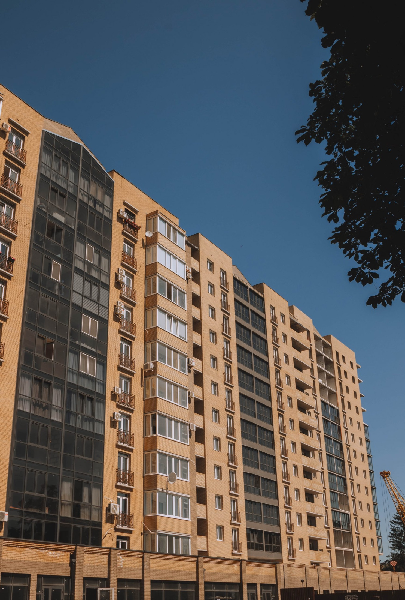
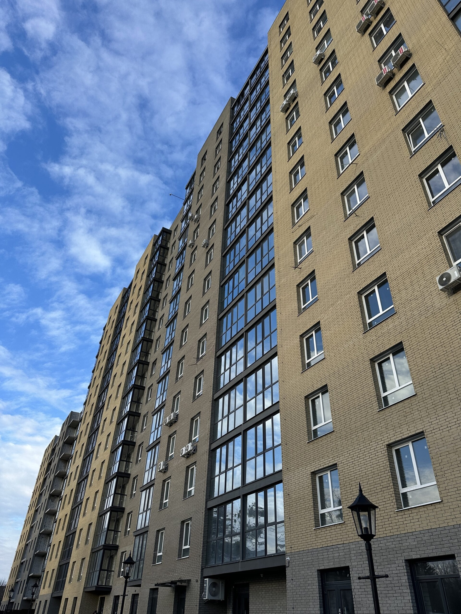

Квартири
29,3 – 88,7 м²
вільне планування
вул. Байди Вишневецького, 68 · Черкаси
Англійський кварталу центрі Черкас
Перший у Черкасах комплекс в англійському стилі — з тихим двором і власним паркінгом.

- 6секцій уже здано
- 1100квартир у комплексі
- 4,5 гатериторія комплексу